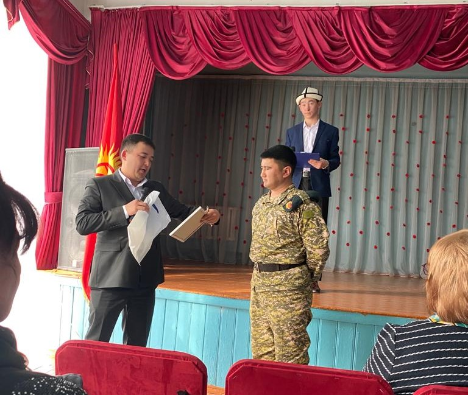
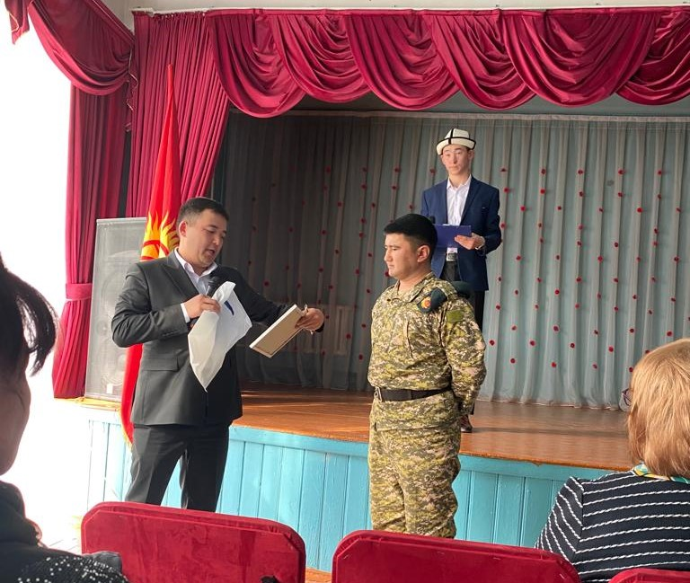

Жаңылыктар
Раззак Бейшекеев — грек-рим күрөшү боюнча дүйнө чемпиону
Грек-рим күрөшү боюнча улуттук курама команданын мүчөсү Раззак Бейшекеев Астанада өтүп жаткан Азия чемпионатында 67 килограммга чейинки салмак ченинде коло медалдын ээси болду.
Спортчу жалпысынан 3 беттеш өткөрдү:
- 1/8 финал
Кутаро Согабе (Япония) — Раззак Бейшекеев — 8:0 - Жубатуучу матч
Раззак Бейшекеев — Husiyuetu (Кытай) — 5:1 - Коло байге үчүн беттеште ал ирандык балбанды 9:0 эсебинде жеңип, коло байге ээси болду.
Белгилей кетсек, Раззак Бейшекеев чоңдор арасындагы Азия чемпионатына биринчи жолу катышкан.


2021 Кадет грек-рим күрөшү боюнча Дүйнө чемпиону.
2022-жылы өспүрүмдөр арасындагы грек-рим күрөшү боюнча Азия чемпионатынын күмүш байге ээси.

Кыргызстандык спортчу Раззак Бейшекеев Венгриянын Будапешт шаарында өткөн күрөш боюнча жаштар арасындагы Дүйнө чемпиондугунда жеңишке жетти.
24-июлда Раззак Казакстандын, Германиянын, Индиянын спортчулары менен беттешип, баарын жеңип алган. 25-июнда Бейшекеев индиялык балбанды жеңип алган.

Раззак Бейшекеев Казакстанда өткөн Азия чемпионатында коло медаль тагынды. Ал 10-апрелде 67 килограммга чейинки салмак ченинде беттешти. Кыргызстанда 3 беттеш өткөрүп, анын экөөндө жеңишке жетип, турнирдин коло байгесинин ээси болду. Коло медаль үчүн болгон күрөштө Бейшекеев ирандык спортчуну 9:0 эсебинде утуп алды.
- Финалдын стратегиясы кандай болду?
3-орун үчүн күрөш абдан жакшы өттү. Аны мөөнөтүнөн мурда бүтүрдүм. Буга чейин бул атаандаш менен беттешкен эмесмин. 2023-жылдан тарта 67 килограммга чейинки салмак категориясында күч сынашып, биринчи жолу чоңдор арасында мелдешке чыгам. Биринчи беттеште өзүмдү сезе албай, япониялыктарга утулуп калдым. Анан кытай менен ирандыкты утуп, эсине келди.
- Чоңдор арасында күрөш кандай болот?
- Чоңдордун деңгээлинде каталарды кечиришпейт. Бирок тактиканы жакшы тандап, катасыз күрөшсөң жеңишке жетесиң.
Чоңдор арасында грек-рим күрөшү боюнча Кыргыз Республикасынын чемпиону 2023
Раззак Бейшекеев (GR60) - Грек-рим күрөшү боюнча Азия чемпионатынын коло байге ээси! —— Грек-рим күрөшү боюнча Азия чемпионаты 2023-жылдын 8-11-апрелинде Астанада (Казакстан).
Раззак Бейшекеев Кыргызстандын жаш, келечектүү, олимпиадалык алтын утуп алам деген спортчуларынын бири.


Кыска спорттук карьерасында буга чейин дүйнө жана Азия чемпионаттарында медаль тагынган.
Анын айтымында, спорт жана эмгекчилдик жаштар үчүн чоң мейкиндикти ачат.
" Кичинекей кезимден грек-рим күрөшү менен машыгып келем. Машыктыруучуларым Ратбек Мамбетов, Турат Мусуралиев, Азат Бейшебеков. Алар мага ар кандай согуштун ыкмаларын, тактикасын үйрөтүштү. Эл аралык ири мелдештерге чейин спортчуларды даярдоого машыктыруучулар ар дайым сапаттуу мамиле жасашат. Алардын аркасы менен эки жолу Азия чемпионатында күмүш медаль тагындым, кадеттер арасында дүйнө чемпиону болдум. Алдыда дагы көп иштер, пландар бар.
Ишти жакшыртуу үчүн күн сайын талыкпай иштейбиз. Спорт көп эшиктерди ачат. Спортчу болом дегендерге сабырдуу болууну сунуштайм.
Ошондой эле, эч качан “ийри жолду” баспаңыз. Ошондо сиз менен баары жакшы болот ", - деп бөлүштү спортчу.
23-сентябрь - Кыргыз Республикасынын Мамлекеттик тил күнү!
Сиздерди Мамлекеттик тил күнү менен куттуктайбыз!
Биз мамлекеттүүлүктүн негизги символдорунун бири болгон Мамлекеттик тил күнүн белгиледик.
Ар бир элдин тили оригиналдуу. “Тил – элдин жүзү, анын байлыгы” деп бекеринен айтылбаса керек. Эне тилин билүү – өз улутуна, тегине болгон сый-урматтын белгиси.


5-ОКТЯБРЬ - МУГАЛИМДЕР КҮНҮ!
2022-жылдын 5-октябрында Мугалимдер күнүн өткөрүп, бул күндү Карылар күнүнө карата белгиледик. Окуучулар мугалимдерин ыр, ыр менен куттуктап, мугалимдерине белектерин беришти.
Ошондой эле, атайын чакырылган коноктор, жеңил атлетика боюнча чемпион М.Д.Кулчунова, маданиятка эмгек сиңирген ишмер, ырчы Шамшиева Ширин, «Ажара» бий шоусу катышты.


Жаштар биздин келечегибиз!
Жаштар биздин келечегибиз! № 66 мектеп-гимназиянын окуучулары дене тарбия мугалимдеринин коштоосунда окуу жайдын спорттук-тарбия комплексин жана жатаканаларын көрсөтүштү.
Окуучуларды директордун тарбия иштери боюнча орун басары Кожомат уулу Тилек тосуп алып, учурда мектепте окуп жаткан жаштар арасындагы Дүйнө жана Азия чемпиондору менен тааныштырды.
Өз сөзүндө: Сиздей спортко кызыккан жаштар үчүн эшигибиз ар дайым ачык.


«Ырдайлы, достор!»
2022-жылдын ноябрь айына пландаштырылган КОНКУРС "Мистер РСК" каражаттын тартыштыгынан улам токтотулду
2023-жылдын 25-декабрында «Ырдайлы, достор!» хор ырынын фестивалы болуп, анда 8-11-класстын окуучулары белгилүү кыргыз аткаруучуларынын «Мурас», «Кыргызстан» ж.б. ырларын аткарышты. Фестиваль жакшы маанайда өттү


21-февраль - Эл аралык эне тил күнү
1999-жылдын 17-ноябрында ЮНЕСКОнун Башкы конференциясы тарабынан жарыяланган Эл аралык эне тил күнү тилдик жана маданий көп түрдүүлүктү жана көп тилдүүлүктү өнүктүрүү максатында 2000-жылдан бери жыл сайын 21-февралда белгиленип келет.


23-февраль - Ата Мекенди коргоочулар күнү
2003-жылдан бери Кыргызстанда 23-февраль Ата Мекенди коргоочулар күнү белгиленип, расмий дем алыш күнү деп жарыяланган.
Ага Кыргыз Республикасынын Улуттук гвардиясынын жоокерлери, ошондой эле “Бөрү” атайын багыттагы чек ара кошуунунун жоокерлери чакырылган.
 

21-март - Нооруз майрамы!
21-мартта, жазгы күн менен түн теңелген күнү Кыргызстанда Нооруз улуттук майрамы белгиленет.
Эгерде бул күнү эркек балдар төрөлсө, аларды салт боюнча Ноорузбай же Ноорузбек, ал эми кыздарды жөн эле Нооруз же Ноорузгүл деп аташкан.


"Тарыхты танганың - тамырсыз калганың!"


Эс алуу бөлмөсүнө мектепте иштеп жүрүп оорудан улам каза болгон Чсгыз Кумушбековдун ысымы ыйгарылган.


БИЗ САНДАРДА
52 ЖЫЛДЫК МЕКТЕП

415 ОКУУЧУ

ЖЫЛЫНА 103 БҮТҮРҮҮЧҮ

27100 КИТЕП БАР
СЫЙМЫКТАНАБЫЗ

Мырзалиев Жантөрө – 2022-жылы грек-рим күрөшү боюнча кадеттер арасында Азия чемпиону. Бишкек, Кыргызстан